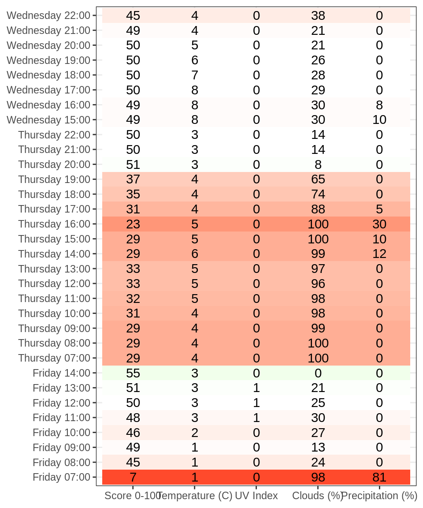
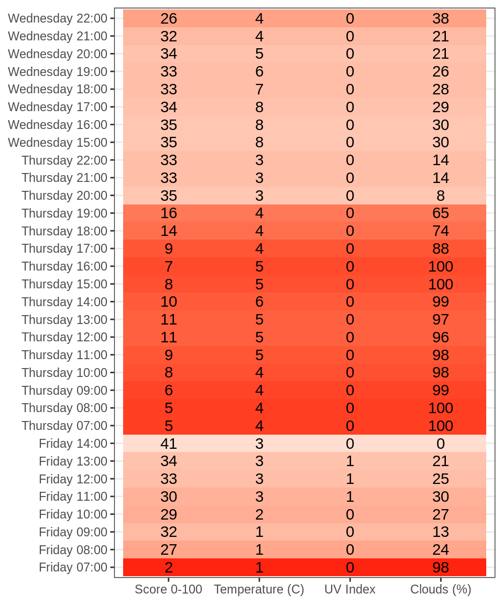
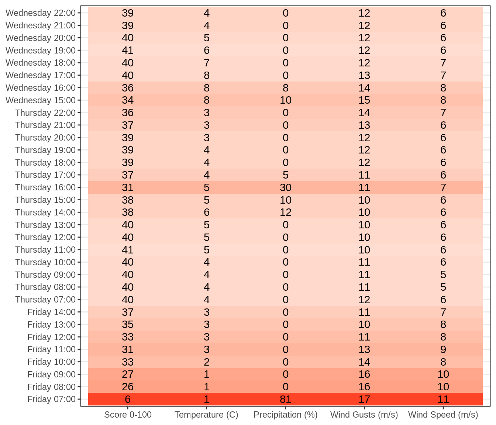
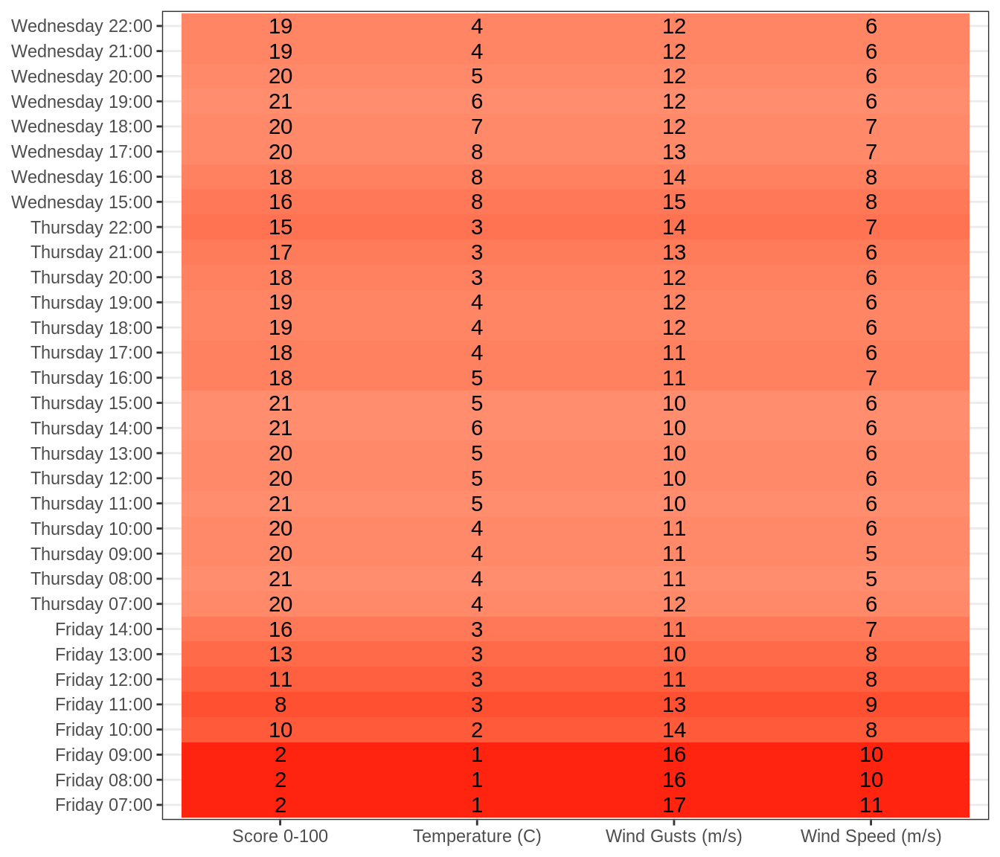
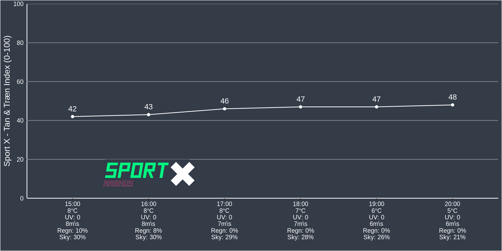
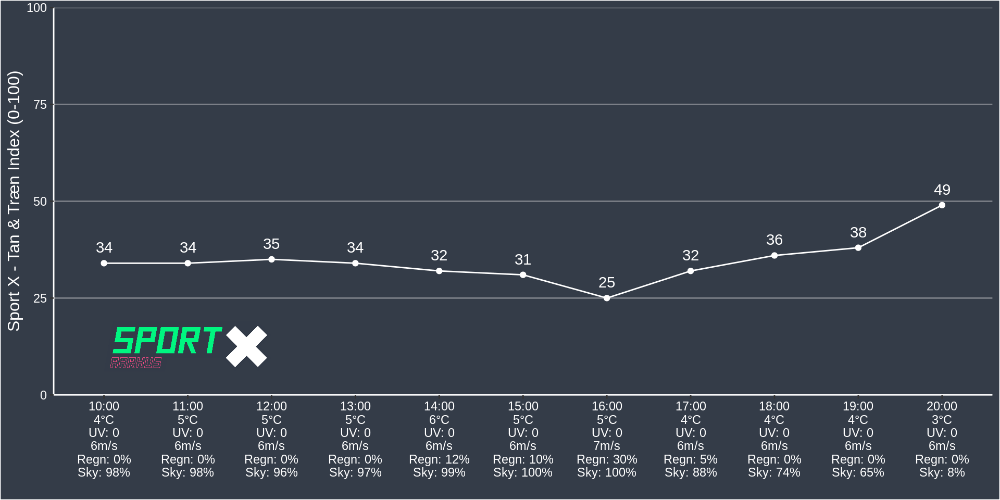

5 Daily Forecast
5.1 UV Index
ggplot(res_json_daily,aes(x=dt,y=uvi)) +
geom_line() +
scale_y_continuous(expand=c(0,0),limits=c(0,10)) +
annotate("rect",ymin = 0,ymax = 2,fill="green",xmin = min(res_json_daily$dt),xmax = max(res_json_daily$dt),alpha=0.3) +
annotate("rect",ymin = 2,ymax = 6,fill="yellow",xmin = min(res_json_daily$dt),xmax = max(res_json_daily$dt),alpha=0.3) +
annotate("rect",ymin = 6,ymax = 8,fill="orange",xmin = min(res_json_daily$dt),xmax = max(res_json_daily$dt),alpha=0.3) +
annotate("rect",ymin = 8,ymax = 10,fill="red",xmin = min(res_json_daily$dt),xmax = max(res_json_daily$dt),alpha=0.3) +
scale_x_datetime(date_labels = "%A",date_breaks = "1 day",date_minor_breaks = "4 hours") +
theme_bw() +
geom_vline(xintercept = Sys.time()) +
labs(y="UV Index",x="Time",title="UV Index")
5.2 Rain
ggplot(res_json_daily,aes(x=dt,y=rain)) +
geom_line() +
geom_vline(xintercept = Sys.time()) +
scale_y_continuous(expand=c(0,0),limits=c(0,NA)) +
scale_x_datetime(date_labels = "%A",date_breaks = "1 day",date_minor_breaks = "4 hours") +
theme_bw() +
labs(y="Rain (mm)",x="Time",title="Rain (mm)")
5.3 Probability of Precipitation
ggplot(res_json_daily,aes(x=dt,y=pop)) +
geom_line() +
geom_vline(xintercept = Sys.time()) +
scale_y_continuous(expand=c(0,0),limits=c(0,NA), labels = scales::percent) +
scale_x_datetime(date_labels = "%A",date_breaks = "1 day",date_minor_breaks = "4 hours") +
theme_bw() +
labs(y="Probability of Precipitation",x="Time",title="Probability of Precipitation")
5.4 Clouds
ggplot(res_json_daily,aes(x=dt,y=clouds)) +
geom_line() +
geom_vline(xintercept = Sys.time()) +
scale_y_continuous(expand=c(0,0),limits=c(0,NA)) +
scale_x_datetime(date_labels = "%A",date_breaks = "1 day",date_minor_breaks = "4 hours") +
theme_bw() +
labs(y="Cloud Coverage",x="Time",title="Cloud Coverage")
5.5 Wind Gusts
ggplot() +
geom_line(data = res_json_daily,aes(x=dt,y=wind_speed)) +
scale_y_continuous(expand=c(0,0),limits=c(0,NA)) +
scale_x_datetime(date_labels = "%A",date_breaks = "1 day",date_minor_breaks = "4 hours") +
theme_bw() +
geom_vline(xintercept = Sys.time()) +
geom_line(data=res_json_daily,aes(x=dt,y=wind_gust),color="red") +
labs(y="Wind",x="Time",title="Wind ")
5.6 Temperature
res_json_daily %>%
dplyr::select(dt) %>%
bind_cols(res_json_daily$temp) %>%
gather(temp,value,day:morn) %>%
dplyr::mutate(value=convert_kelvin(value)) %>%
ggplot(.,aes(x=dt,y=value)) +
geom_vline(xintercept = Sys.time()) +
geom_line(aes(color=temp)) +
scale_y_continuous(limits=c(0,25),expand=c(0,0)) +
scale_x_datetime(date_breaks = "1 day",date_minor_breaks = "4 hours",date_labels = "%A") +
theme_bw() +
theme(legend.position = "bottom") +
labs(x="Date",y="Temperature (C)")